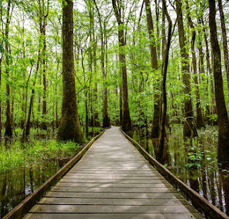
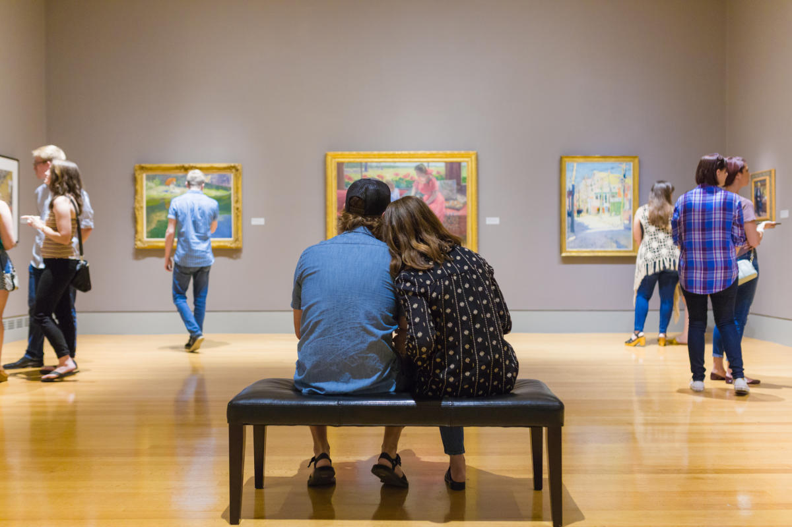
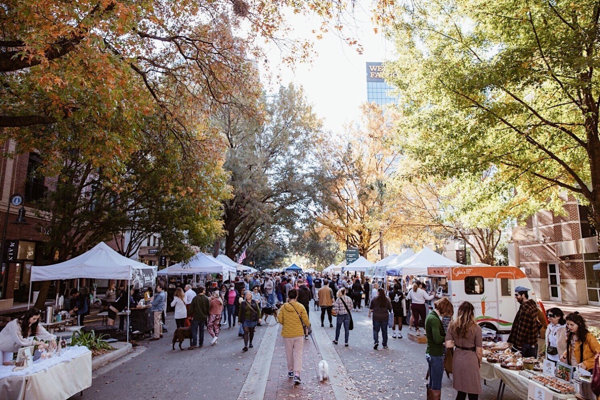
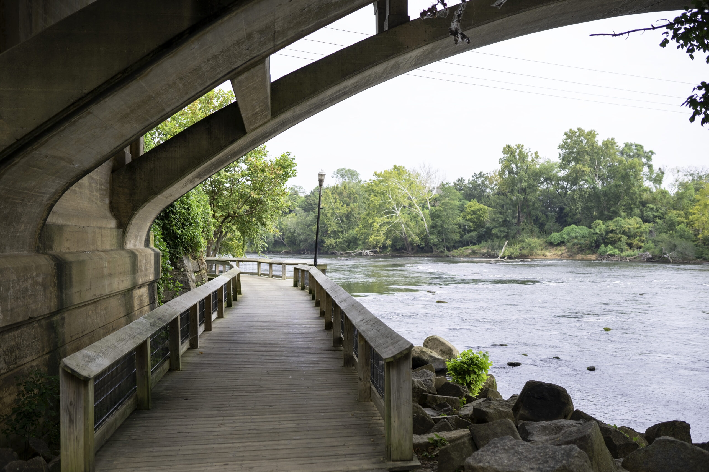
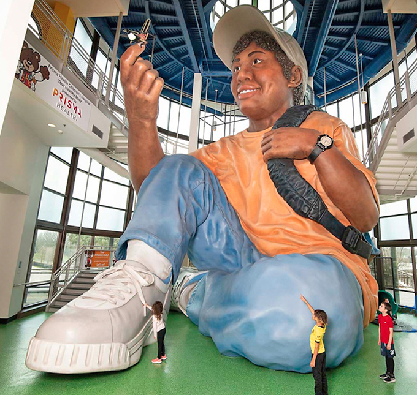
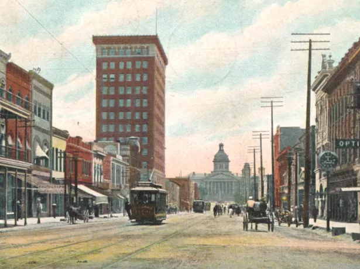
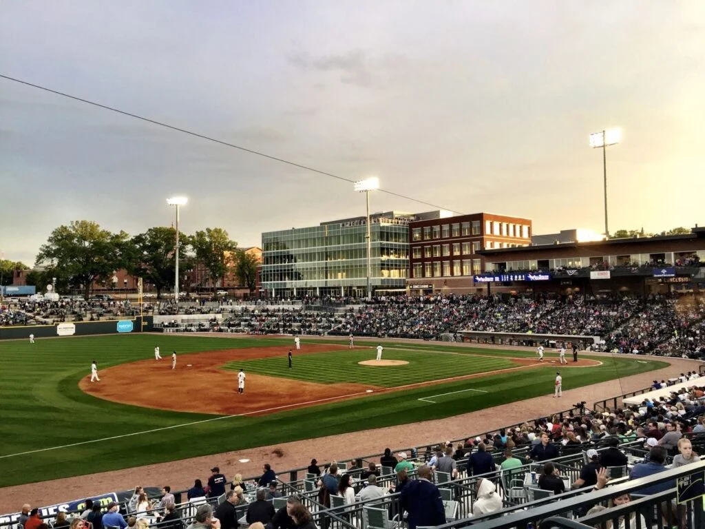

Columbia, SC Activities
There’s always something to do in Columbia! Whether you’re looking for a relaxing afternoon outdoors, a fun night with friends, a new place to eat, or something completely different, there’s plenty to explore both on and off campus. Discover some of the best activities, hidden gems, and favorite spots around the University of South Carolina and the Columbia area, and find your next adventure!

Riverbanks Zoo & Gardens
See thousands of animals, explore botanical gardens, and enjoy family-friendly exhibits near downtown Columbia.
South Carolina State Museum
Explore South Carolina’s art, history, natural history, and science across four floors of exhibits.

Congaree National Park
Hike through old-growth forest, walk the boardwalk, or paddle through one of South Carolina’s most beautiful natural areas.

Columbia Museum of Art
View international art, rotating exhibitions, and creative programs in the heart of downtown.

Soda City Market
Spend a Saturday morning browsing local food, art, crafts, and produce on Main Street.

Riverfront Park
Walk, run, or bike beside the Columbia Canal and Congaree River while enjoying river views and local history.

EdVenture Children’s Museum
Kids can learn through hands-on exhibits, imaginative play, and interactive science activities.

Historic Columbia
Take a guided tour of preserved homes and gardens to learn about Columbia’s past.

Columbia Fireflies Baseball
Catch a fun minor-league baseball game at Segra Park during the season.